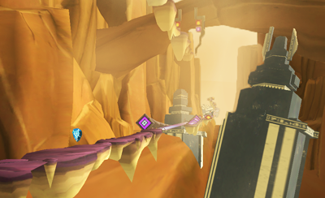
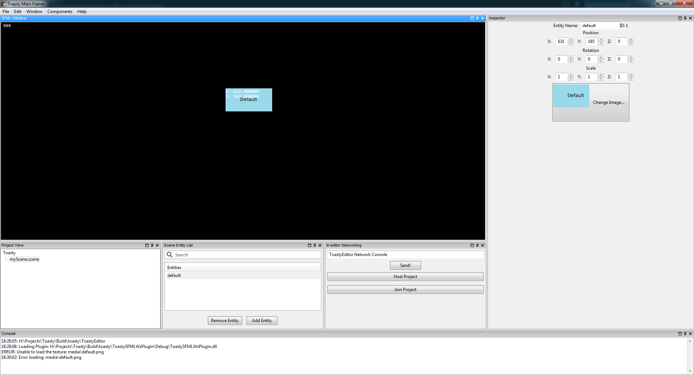
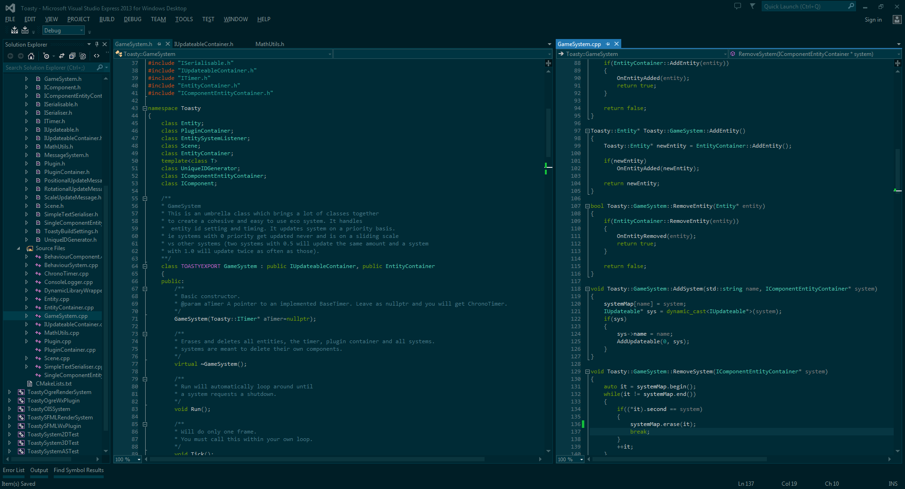

Nathan Hold
Nathans Portfolio
Hey there, this is a simple outline of projects I have worked on or completed.
Projects
Valkyrie is the major project I worked on while at Bifrost Studios, it took the good part of 2 years. At it's peak there were about 4 programmers, 6 artists and 1 designer working on it.
I learnt a lot about C# during the creation of this project with it consisting of very modular components that make it all up. I was the project manager for the first year of the project as well as the only programmer, in the end I was project manager and sole programmer for the last 3 months of development.
The Toasty Editor is my biggest personal project yet and I have been working on it for a year and a half now in my spare time as well as the engine. The editor is being built to be multi-user, so in real time two developers can be working on the same scene or code. Seeing others work in real time is an interesting idea that I want to explore more and think can have many potential uses.
My end goal for this is to be able to be a full game development suite, ranging from pre-production(Design, Project Managment) all the way to post-production. The base editor is incredibly small and everything is added in via plugins (e.g. The SFMLplugin or Ogreplugin). The editor is written in C++ using wxWidgets as the GUI toolkit. This was due to my annoyance at the Unity editor which when deploying to mobile devices has a large footprint with an empty scene and no code \ art, so Toasty users will only pay for what they use.
The engine is the part of Toasty which has all the actual game functionality. It has a lot of sub-projects that make it up and that are pluggable for example SFMLRenderSystem, Box2DPhysicsSystem, OgreRenderSystem, BulletPhysicsSystem and AngelScriptingSystem. The user can choose to only use what libraries they want to. So, they could just link to SFMLRenderSystem and use the basic rect->rect collision to create a simple Pong game, or they can link to Ogre, Bullet and AngelScript systems which gives full components to develop a physics based FPS with scripted events! There is lots to do on this, such as networking and GUI, have a read in my blog to get a better understanding of it.
This is my blog where I usually just talk about my development of Toasty, it's sometimes sparse and there may not be many updates in between but life is busy sometimes! Have a read if you want to see how the internals of Toasty are working, it's a lot of reading though!
wxWidgets AUI Dynamic Notebook Branch
For my Toasty Editor, I wanted a similar experience to Unity3D as the ability to drag out any window into it's own set of tabs is very powerful and is good for perfecting layouts for many different projects. So I started researching wxWidgets to see what was happening in that regard.
In doing that I found a ~1 year old branch on gitorious which I began merging with the master branch of wxWidgets, this took around 3 months initially (There were many different issues to solve, wxWidgets gets updated VERY often.). But from there I posted the merge up on the wx-dev google group, where around 4 others joined the project to develop it, including the original creator of the feature. We are still developing it now whenever we can to try and get it merged into the master. We are currently working on backwards compatibility and documentation which are the final stages before attempting a merge.
You can see this working in my Toasty Editor video above.

Brains was the final project my team (The 3 Amigos) developed for Qantm, it was a team of Me(Programmer, Project Manager), Michael Sampson(Programmer) and Lynden Nowland(Artist). we all shared the design aspect of the game during it's development. The game was written using C++, Ogre3D and the AHH game framework. We wrote our own custom pathfinding, flocking \ avoiding behavoiur, GUI system and editor to accompany the game. This game won the QANTM Game of the Year in 2010 up against 5 other contenders.
It's a simple game, where you control a horde of zombies and try to eat as many humans as possible while avoiding traps that the pesky humans have placed.